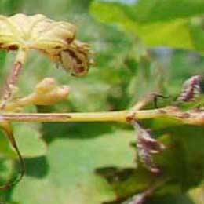
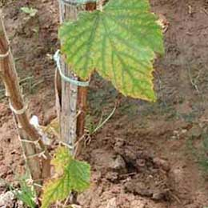
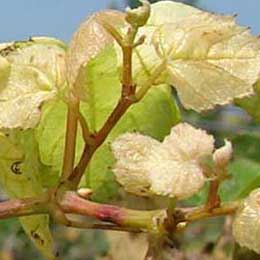

Symptoms: Colour fading from leaf margins,leaf margins becomes necrotic and curling occurs. Affect:Plant growth,root devslopment and fruit development are usually reduced.
Solution
Product: Fertimax13:00:45( 5-10gm/lit) Soil/Drip: Plantex 13:00:45 3kg/acre(drip) Benefit: Ensures good,strong fruit set and increase sugar content in grape

Calcium deficiency
Symptoms: Blossom end rot of grapes. Affect: Skin becomes loose and bursts open.
Solution
Product: Aquacal-3-4ml/lit, combical-3-5gm/lit, horticab 2-3ml/lit Soil/Drip: combical 3 kg/acre or Plantex CN 3kg/acre Benefit: Boosts new leaf and bud growth,ensures strong skin and minimise fruit disorder and diseases

Magnesium deficiency
Symptoms: Bright yellow wedge shaped extends inward between the veins on older leaves. Affect: When severe,necrosis extends inwards from the leaf margin and fruit cluster and stem necrosis .
Solution
Product: Magmix 4-5gm/lit, zinc mag 3-5ml/lit Soil/Drip: Benefit: Maximise photosynthetic activity,increase growth and berry development

Sulphur deficiency
Symptoms: Redding of young leaves and red dots near the edges of younger leaves. Affect: Reduced growth,small and loose cluster due to reduced fruit set.